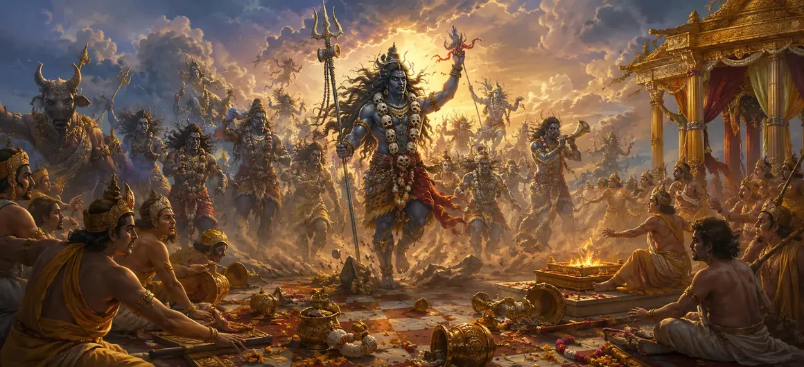

दक्ष के यज्ञ का विध्वंस - भाग 1
वायवीय संहिता के बीसवें अध्याय में राजा दक्ष के भव्य यज्ञ क्षेत्र में वीरभद्र और उनकी भयंकर सेना के नाटकीय आगमन और प्रारंभिक हमले का वर्णन है।
ऋषि वायु ने बताया कि कैसे दैवीय क्रोध के भौतिक रूप में प्रकट होने पर शांतिपूर्ण सभा पूरी तरह से दहशत में आ गई।
यह अध्याय अहंकार और अधर्म के विरुद्ध पौराणिक प्रतिशोध की शुरुआत करता है।
अध्याय 20 की मुख्य बातें
दिव्य आगमन
वीरभद्र और गणों की भीड़ के अखाड़े में भयानक प्रवेश का वर्णन।
असेंबली घबराहट
यह देवताओं, ऋषियों और पुजारियों के बीच अचानक भय और भ्रम को दर्शाता है।
प्रारंभिक आक्रमण
विनाश की पहली लहर को कैद करता है क्योंकि वेदियों और सजावटों को उलट दिया जाता है।
अडिग बल
यह दर्शाता है कि कैसे कोई भी दिव्य हथियार या बाधा भीषण प्रगति को नहीं रोक सकती।
दक्ष के अहंकार को चुनौती दी गई
दक्ष की अहंकारी सत्ता से सीधा टकराव प्रस्तुत करता है।
भाग 2 की प्रस्तावना
अध्याय 21 में खोजी गई गहन लड़ाइयों और संरचनात्मक विध्वंस के लिए मंच तैयार करता है।
इस अध्याय में मुख्य विषय
दक्ष का अखाड़े में आगमन
भयानक और तेजस्वी वीरभद्र के नेतृत्व में गणों की समुद्र जैसी सेना अचानक आए तूफान की तरह राजा दक्ष की यज्ञ भूमि पर उतर आई।
उनके पैरों के नीचे से धरती कांपने लगी और आसमान एक अशुभ लाल रंग की चमक से काला हो गया, जो ब्रह्मांडीय न्याय के आगमन की घोषणा कर रहा था।
देवताओं और ऋषियों में भय
भयानक भूतों और भयंकर योद्धाओं को देखकर, इकट्ठे हुए देवता, पुजारी और ऋषि भय से स्तब्ध हो गए।
यज्ञ की भव्यता अराजकता में बदल गई क्योंकि प्रतिभागियों ने अपने अनुष्ठान उपकरण गिरा दिए और खुद को बचाने के लिए हर दिशा में भाग गए।
वीरभद्र का बेजोड़ रोष
वीरभद्र पूरे अखाड़े में गर्जना कर रहे थे, उनकी आवाज़ ब्रह्मांडीय गड़गड़ाहट की तरह गूँज रही थी, दक्ष और उनके अहंकारी समर्थकों को उनके अपराध के लिए फटकार लगा रहे थे।
उनकी चमकती आँखों और उग्र मुद्रा से यह स्पष्ट हो गया कि कोई भी नश्वर या दिव्य प्रार्थना आसन्न हिसाब को टाल नहीं सकती।
बलि वेदियों को नष्ट करना
अपनी शक्तिशाली भुजाओं की लहर के साथ, वीरभद्र और उनके गणों ने भव्य सजावटी मेहराबों को तोड़ना, पवित्र जहाजों को बिखेरना और यज्ञ की आग को बुझाना शुरू कर दिया।
शान से खड़ा किया गया भव्य अखाड़ा कुछ ही क्षणों में टुकड़े-टुकड़े हो गया।
प्रारंभिक प्रतिरोध और हार
कुछ दिव्य संरक्षकों और रक्षकों ने परिधि की रक्षा करने का प्रयास किया, लेकिन वीरभद्र की ताकत के सामने उनके हथियार तुरंत बिखर गए।
हमले के सामने प्रतिरोध ढह गया, जिससे धार्मिक आक्रोश से प्रेरित दैवीय इच्छा का विरोध करने की पूर्ण निरर्थकता साबित हुई।
दैवीय प्रतिशोध का खुलासा
जैसे ही भाग 1 समाप्त होता है, अराजक दृश्य एक व्यापक गणना के लिए मंच तैयार करता है जहां अहंकारी बलिदान के प्रत्येक प्रमुख व्यक्ति को जवाबदेही का सामना करना पड़ता है।
जैसे ही केंद्रीय संघर्ष अपने उबलते बिंदु पर पहुँचता है, हवा तनाव से भर जाती है।
अध्याय 21 की ओर
अध्याय 20 में प्रारंभिक आक्रमण और अखाड़े की टूट-फूट को देखने के बाद, ऋषि वायु ने अध्याय 21, 'दक्ष के बलिदान का विनाश - भाग 2' का परिचय दिया।
अध्याय 21 में युद्ध की निरंतरता, दिव्य प्रतिभागियों की विनम्रता और विनाश के अंतिम चरमोत्कर्ष का विवरण दिया गया है।
अध्याय 20 की मुख्य शिक्षाएँ
अहंकार की व्यर्थता
अहंकार से प्रेरित अनुष्ठानों में दैवीय कानून की शुद्ध शक्ति के विरुद्ध कोई शक्ति नहीं होती।
अपरिहार्य न्याय
गलत काम और सर्वोच्च के प्रति अनादर को अंततः त्वरित और संपूर्ण सुधार का सामना करना पड़ता है।
प्रचंड पराक्रम
वीरभद्र की प्रगति दर्शाती है कि दैवीय एजेंटों को नश्वर अहंकार से रोका नहीं जा सकता।
अहंकार की अराजकता
अभिमान एक नाजुक संरचना बनाता है जो दबाव में तुरंत ढह जाती है।
लौकिक व्यवस्था
सच्चे आध्यात्मिक संतुलन को बहाल करने की दिशा में अधर्म का विनाश एक आवश्यक कदम है।
महाकाव्य आख्यान
बाद के अध्यायों में चरम निष्कर्षों के लिए तीव्र गति बनाता है।
आध्यात्मिक चिंतन
दक्ष के भव्य अखाड़े का तेजी से पतन हमें सिखाता है कि गर्व, बहिष्कार और अहंकार में निहित किसी भी आध्यात्मिक प्रयास में संरचनात्मक अखंडता का अभाव है; सच्ची कृपा केवल विनम्रता और सार्वभौमिक श्रद्धा में ही पनपती है।
अध्याय 20 का संदेश जीना
यह सुनिश्चित करने के लिए अपने कार्यों की जांच करें कि वे अहंकारी प्रदर्शन के बजाय वास्तविक भक्ति से प्रेरित हैं।
सभी आध्यात्मिक मार्गों का सम्मान करें और अपने व्यक्तिगत और आध्यात्मिक जीवन में अहंकार के जाल से बचें।
विनम्रता को वह आधार बनने दें जिस पर आपका आध्यात्मिक चरित्र निर्मित होता है।
प्रमुख आध्यात्मिक अवधारणाएँ
यज्ञ क्षेत्र में दैवीय सेना का नाटकीय प्रवेश।
इकट्ठे हुए खगोलीय प्राणियों द्वारा अचानक भय और घबराहट का अनुभव।
शक्तिशाली आक्रमण ने अहंकारपूर्ण बलि संरचनाओं को ध्वस्त कर दिया।
अधर्मी और अहंकारी अनुष्ठानों का भौतिक निराकरण।
गौरवान्वित अभ्यासियों पर लौकिक सुधार लागू करना।
विनाश की निरंतरता का अध्याय 21 में आगे पता लगाया गया है।
अध्याय सारांश
वायवीय संहिता अध्याय 20 प्रस्तुत करता है दक्ष के बलिदान का विनाश - भाग 1। वीरभद्र और गणों के जोरदार आगमन, देवताओं के बीच घबराहट और यज्ञ वेदियों के प्रारंभिक विध्वंस का विवरण देते हुए, यह अध्याय स्पष्ट रूप से अहंकार के विनाश को चित्रित करता है। यह अध्याय 21, 'दक्ष के बलिदान का विनाश - भाग 2' के लिए मंच तैयार करता है, जहां पूर्ण प्रतिशोध सामने आता है।
अक्सर पूछे जाने वाले प्रश्न
1. वायवीय संहिता अध्याय 20 का प्राथमिक विषय क्या है?
अध्याय 20 में राजा दक्ष के यज्ञ क्षेत्र में वीरभद्र और भयंकर गण सेना के आगमन का वर्णन है, जो विनाश की शुरुआत का प्रतीक है।
2. दक्ष के यज्ञ में भाग लेने वालों की वीरभद्र के आगमन पर क्या प्रतिक्रिया है?
जैसे ही अजेय दिव्य सेना मैदान में घुसी, एकत्रित संतों, पुजारियों और दिव्य प्राणियों के बीच दहशत, आतंक और भ्रम फैल गया।
3. मैदान में उतरने पर वीरभद्र की क्या भूमिका होती है?
वीरभद्र बेजोड़ क्रोध के साथ मोर्चा संभालते हैं, पवित्र संरचनाओं को ध्वस्त करते हैं और अहंकारी सभा को चुनौती देते हैं।
4. इस अध्याय को भाग 1 के रूप में क्यों नामित किया गया है?
इसमें प्रारंभिक आक्रमण, घबराहट और शुरुआती झड़पों को शामिल किया गया है, जो भाग 2 में जारी रहने वाले गहरे टकराव को स्थापित करता है।
5. दक्ष के यज्ञ का विध्वंस क्या शिक्षा देता है?
यह दर्शाता है कि अभिमान, सर्वोच्च भगवान के बहिष्कार और अहंकारी अहंकार के साथ किए गए अनुष्ठानों को दैवीय विनाश का सामना करना पड़ता है।
6. अध्याय 20 के बाद नेविगेशन के लिए अगला अध्याय कौन सा है?
नेविगेशन के लिए अगला अध्याय अध्याय 21 है, जिसका शीर्षक 'दक्ष के बलिदान का विनाश - भाग 2' है।
"जब दैवीय कानून मानवीय अहंकार का सामना करता है, तो अहंकार के सबसे भव्य स्मारक धार्मिक क्रोध की सांस के सामने धूल में गिर जाते हैं।"
वायवीय संहिता के माध्यम से जारी रखें
अध्याय 20 विवरण दक्ष के बलिदान का विनाश - भाग 1। अध्याय 21, दक्ष के बलिदान का विनाश - भाग 2 तक जारी रखें।